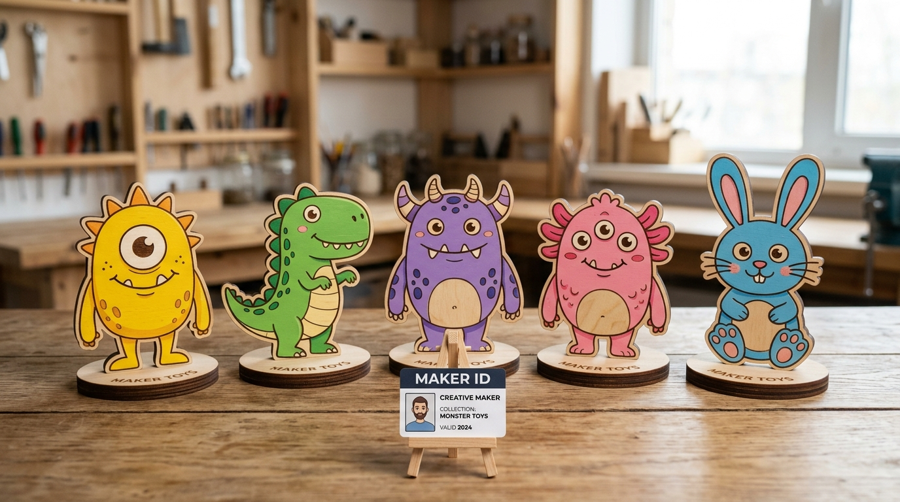
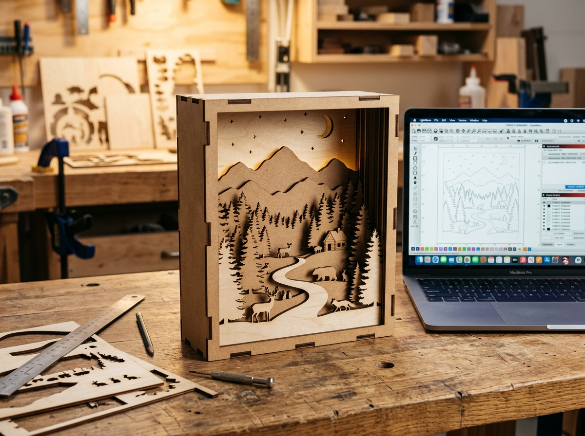

Colegio Mater Admirabilis
Colegio Mater Admirabilis
Colegio Mater Admirabilis
Colegio Mater Admirabilis
Llevamos la experiencia de un laboratorio de tecnología a tu colegio sin compra de equipos. Desde tinkiLab trasladamos las impresoras 3D, cortadora láser, materiales y tutores especializados para crear una propuesta de verano autofinanciada, rentable y de alto valor para tus familias.

El colegio facilita su sala de cómputo y la convocatoria; nosotros resolvemos el 100% de la tecnología, los materiales y el acompañamiento en aula.
Laboratorio móvil activo: trasladamos, calibramos y operamos las impresoras 3D y cortadora láser móvil sellada solo durante las sesiones del taller.
Filamentos PLA ecológicos biodegradables, madera MDF, pinturas acrílicas al agua, pinceles y soportes de autor.
Equipo formado en la red global Fab Academy del Center for Bits and Atoms (MIT). Didáctica STEAM infantil y acompañamiento uno a uno.
Ruta paso a paso facilitada con entornos visuales intuitivos y plugins propios desarrollados para modelar sin trabas técnicas.
Videotutoriales paso a paso y plantillas descargables para que los estudiantes repasen y compartan logros en casa.
Clase demostrativa previa gratuita (Open Day), feria familiar de clausura (Demo Day) y certificados con el sello del colegio.
Inspirada en el aprendizaje práctico: los niños dejan de ser espectadores pasivos de pantallas y se convierten en creadores e inventores a través de 6 etapas conectadas.
Boceto y concepto a mano alzada, proporciones y narrativa visual del proyecto.
Digitalización del trazo y vectorización de contornos con entornos visuales intuitivos.
Generación de volumen 3D con software asistido y plugins propios de makerdu.
Materialización física con impresora 3D en PLA biodegradable o cortadora láser.
Pintura manual con pinturas acrílicas al agua, rotuladores de precisión y ensamble.
Valoración de su creación, exposición en el Demo Day familiar y certificados.
Un recorrido de 6 semanas (12 sesiones • 18 horas) estructurado en 2 grandes proyectos independientes de 3 semanas. Cada estudiante materializa y se lleva a casa dos piezas de autor de alto valor.

Del boceto en papel al modelado digital en makerdu. Cada estudiante diseña su propio personaje, lo imprime en filamento biodegradable PLA y le da acabado artístico con pinturas acrílicas al agua y rotuladores de precisión, montándolo sobre su peana de autor.

Diseño vectorial y ensamble tridimensional. Cada estudiante diseña siluetas por planos de profundidad (espacio estelar, selva o fantasía) cortadas con máxima precisión en cortadora láser. Ensamblan la caja mediante encajes de madera y la presentan en el Demo Day.
Realizamos una sesión demostrativa gratuita de 45 minutos en el colegio durante las jornadas de matrícula. Llevamos las máquinas funcionando en vivo. Al ver nacer un objeto frente a sus ojos, las familias completan los cupos con total confianza.
En la sesión 12, invitamos a los padres a la exposición de proyectos. Cada estudiante presenta su creación y recibe su certificado. Los padres comparten fotos en redes sociales etiquetando al colegio, generando publicidad orgánica y prestigio para Mater Admirabilis.
12 sesiones prácticas de 90 minutos con máquinas, insumos y plataforma incluidos.
La propuesta pedagógica de tinkiLab está dirigida por profesionales diplomados del Fab Academy (Center for Bits and Atoms del MIT). Además, compartimos guías abiertas, tutoriales y casos de éxito en nuestro canal de YouTube con más de 18 episodios dedicados a la educación maker.
Podemos visitar la sala de cómputo del colegio, definir los días ideales de dictado y entregarte el diseño de flyer listo para compartir con las familias.